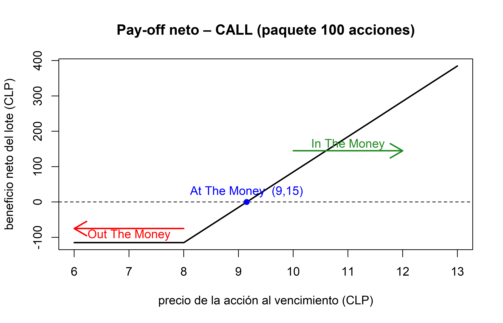

r <- 0.15 # tasa de descuento
# Empresa A
D1 <- 20; D2 <- 10; D3 <- 60 # dividendos
gA <- 0.08 # crecimiento perpetuo
pv_divs_A <- D1/(1+r) + D2/(1+r)^2 + D3/(1+r)^3 #Fórmula
terminal_A <- D3*(1+gA)/(r - gA)
pv_term_A <- terminal_A/(1+r)^3
P0_A <- pv_divs_A + pv_term_A
#Empresa B
D0 <- 10 # dividendo recién pagado
gB <- 0.12 #tasa constante
D1_B <- 10
P0_B <- D1_B/(r - gB) #modelo gordon-shapiro

Profesor:
- Carlos CavieresIntegrantes:
- Meboly Vega
- Vicente Román
- Luis Gaete
- Felipe Ugalde1 Introducción Librerias y Paquetes a instalar
El presente informe muestra ejercicios relacionados con ocho activos financieros vistos durante el semestre en la asignatura. El diseño del informe se realizó mediante el motor de Quarto a través de RStudio, donde a su vez se trabajó con el lenguaje de programación R. A continuación (chunk no visible en el informe), se ejecutan las líneas de código correspondientes a la base de funcionamiento del script (instalación de paquetes y librerías necesarias).
Nota: Visual Studio Code es capaz de generar un informe a través del código mediante Ctrl+E y Ctrl+Shift+K (Previsualiza el documento); En caso de que ello no funcione, dentro de Github se encuentra el HTLM siendo este https://vicenteromausach.github.io/ActivosFinancierosF3/ . de todas maneras se recomienda la ejecución y renderizado en RStudio (tanto en R como en Python) mediante el botón RENDER ubicado en la cinta de opciones del archivo .qmd
2 Activo: Acciones
Definición
Las acciones son títulos de propiedad que otorgan a su poseedor una participación proporcional en el capital y en los flujos futuros (dividendos) de una empresa.
El valor teórico de una acción se obtiene descontando al presente los dividendos esperados y, de ser necesario, un valor terminal.
2.1 Ejemplo (Clases)
La empresa A pagará durante los próximos tres años dividendos de $20, $10 y $60.
A partir del cuarto año, los dividendos crecerán indefinidamente al 8 % anual.
La empresa B va a pagar un dividendo de $10 y este crecerá a una tasa constante del 12 % anual.
La tasa de descuento de mercado es 15 %.
¿Cuál es el valor actual de la acción de cada empresa?
Fórmulas
Modelo de Gordon‑Shapiro (crecimiento constante)
\[ P_0 = \frac{D_1}{r - g} \]
Modelo de dos etapas (crecimiento no constante seguido de crecimiento perpetuo)
\[ P_0 \;=\; \sum_{t=1}^{t} \frac{D_t}{(1+r)^{n}} \;+\; \frac{D_n\,(1+g)}{(r-g)\,(1+r)^{n}} \]
D_t: dividendo en el año t
r: tasa de descuento
g: tasa de crecimiento
n: último año de la etapa explícita
2.2 Código R
2.2.1 Tabla de Resultados
res <- data.frame(
empresa = c("A", "B"),
precio_actual = c(round(P0_A, 2), round(P0_B, 2)))
kable(res, caption = "Valor presente estimado de cada acción")| empresa | precio_actual |
|---|---|
| A | 673.08 |
| B | 333.33 |
2.3 Gráfico
set.seed(161)
n <- 500 # numero de dias bursatiles simulados
dt <- 1/252 # tamano del paso temporal en años (1 dia bursatil)
sigma <- 0.25 # riesgo anual supuesto
rw_price <- function(P0, mu, sigma, n, dt) {
eps <- rnorm(n, 0, sqrt(dt))
path <- c(P0, P0 * cumprod(exp((mu - 0.5*sigma^2)*dt + sigma*eps)))
path }
price_A <- rw_price(P0_A, gA, sigma, n, dt) # simula precios para la empresa A
price_B <- rw_price(P0_B, gB, sigma, n, dt) # para la empresa B
plot(price_A, type = "l", lwd = 2, ylim = range(c(price_A, price_B)),
xlab = "dias", ylab = "precio simulado", main = "Random Walk de Precios")
lines(price_B, col = 4, lwd = 2)
legend("topleft", legend = c("Empresa A", "Empresa B"), lwd = 2, col = c(1,4))2.4 Resultado y Conclusión
Precio estimado de las acciones
- Empresa A: $673.08
- Empresa B: $333.33
Interpretación
- La acción A vale más debido al gran dividendo explícito de $60 y al crecimiento perpetuo del 8 %.
- La acción B depende íntegramente del crecimiento constante del 12 %, partiendo de un dividendo menor.
- El gráfico muestra trayectorias simuladas: mayores pendientes medias reflejan mayores tasas de crecimiento esperadas, pero ambas series exhiben volatilidad; el inversionista debe ponderar riesgo y retorno antes de decidir.
3 Activo: Bonos
Definición
Un bono es un instrumento de deuda que otorga al tenedor el derecho a recibir pagos de cupón periódicos y la devolución del valor nominal en la fecha de vencimiento.
El precio de un bono corresponde al valor presente de esos flujos de efectivo descontados a la tasa de rendimiento exigida por el mercado.
3.1 Ejemplo (Clases)
Un bono con valor nominal de $1 000 paga cupones anuales de 10 % durante 10 años.
Calcule el precio del bono para tres escenarios de tasas de mercado:
- 10%
- 12%
- 8%
Fórmulas
Valor presente del bono
\[ P_0 \;=\; \sum_{t=1}^{n} \frac{C}{(1+r)^{t}} \;+\; \frac{F}{(1+r)^{n}} \] donde
C: tasa cupón
F: valor nominal
n: número de periodos hasta el vencimiento
r: tasa de rendimiento de mercado
Se rescribio la Fórmula de la siguiente manera:
\[
P \;=\;I\!\left[\frac{(1+i)^{n}-1}{i(1+i)^{n}}\right]\;+\;\frac{VN}{(1+i)^{n}}
\] donde
I = cupón anual i = tasa de mercado n = número de períodos VN = valor nominal del bono
3.2 Código R
# parámetros del bono
vn <- 1000 # valor nominal
c <- 0.10 # tasa cupón
n <- 10 # años al vencimiento
I <- vn * c # cupón anual
# tasas de mercado a evaluar
tasas <- c(0.10, 0.12, 0.08)
# función de valoración
precio_bono <- function(i, I, vn, n) {
pv_cupones <- I * ((1 + i)^n - 1) / (i * (1 + i)^n)
pv_principal <- vn / (1 + i)^n
pv_cupones + pv_principal}
precios <- sapply(tasas, precio_bono, I = I, vn = vn, n = n)3.2.1 Tabla de Resultados
library(knitr)
res_bono <- data.frame(
rendimiento = c("10 %", "12 %", "8 %"),
precio = round(precios, 2))
kable(res_bono, caption = "Precio del bono para distintos rendimientos")| rendimiento | precio |
|---|---|
| 10 % | 1000.0 |
| 12 % | 887.0 |
| 8 % | 1134.2 |
3.3 Gráfico
precio_bono <- function(yield, cup, vn, n) {
I <- cup * vn
pv_coupons <- I * ((1 + yield)^n - 1) / (yield * (1 + yield)^n)
pv_principal <- vn / (1 + yield)^n
pv_coupons + pv_principal}
#Rendimiento histórico del US treasury a 10 años (tasa anual, ya en %)
getSymbols("DGS10", src = "FRED") # serie[1] "DGS10"yield_xts <- na.omit(DGS10) / 100 # pasar a decimal
#Supuesto de que es un bono cupón 3%, 10 años
cup_real <- 0.03
vn <- 100
n_real <- 10
#precio diario
price_real <- xts(
precio_bono(coredata(yield_xts), cup_real, vn, n_real),
order.by = index(yield_xts))
# Gráfico!
autoplot(price_real) +
ggtitle("Precio implícito de un bono cupón 3%, 10 años
basado en el Treasury yield 10Y (FRED)") +
xlab("") + ylab("precio ($)")3.4 Resultado y Conclusión
Precio calculado
- Con rendimiento 10% $1000 (a la par).
- Con rendimiento 12% $887 (con descuento).
- Con rendimiento 8% $1134.2 (con prima).
Interpretación
- Si la tasa cupón es igual a la tasa de mercado (10 %), el bono se vende a su valor nominal.
- Cuando el rendimiento exigido sube a 12 %, el bono se valora por debajo de la par (descuento) porque sus cupones resultan poco atractivos.
- A un rendimiento de 8 % el bono se valora por encima de la par (prima) ya que sus cupones superan la rentabilidad ofrecida por el mercado.
4 Activo: Forward sobre tipo de cambio
Definición
Un forward es un contrato a plazo que obliga a las partes a intercambiar un activo (en este caso la divisa) en una fecha futura a un precio pactado hoy.
Para divisas, el precio forward se determina por la paridad de intereses entre las dos monedas: el tipo de cambio spot ajustado por las tasas de interés de cada país durante el plazo acordado.
4.1 Ejemplo (Clases)
Un importador necesita 1.000.000 USD dentro de 90 días para pagar mercadería.
Los datos de mercado son:
| Concepto | Valor |
|---|---|
| Spot compra (CLP/USD) | 740 |
| Spot venta (CLP/USD) | 750 |
| Tasa CLP colocación (3 meses) | 0,9% anual |
| Tasa CLP captación (3 meses) | 0,8% anual |
| Tasa USD captación (3 meses) | 2,3% anual |
| Tasa USD colocación (3 meses) | 2,4% anual |
El importador pacta un forward de compra (él compra USD a futuro).
¿Qué tipo de cambio forward deberá pagar y cuál será el costo total en pesos?
Fórmulas
Paridad descubierta de intereses (compra de USD a plazo)
\[F = S_{\text{compra}} \,\frac{1 + r_{\text{CLP, col}}\,\dfrac{n}{30}} {1 + r_{\text{USD, cap}}\,\dfrac{n}{360}}\]
- : F: tipo de cambio forward (CLP/USD)
-
S_compra: tipo de cambio spot de compra (CLP/USD)
-
r_CLP,col: tasa de colocación en CLP
-
r_USD,cap: tasa de captación en USD
-
n: días al vencimiento
4.2 Código R
# datos
spot_compra <- 740 # CLP por USD
r_clp_col <- 0.009 # 0,9 % anual
r_usd_cap <- 0.023 # 2,3 % anual
n_dias <- 90
usd_neces <- 1e6 # 1 000 000 USD
# Fórmula del forward de compra
F_forward <- spot_compra *
(1 + r_clp_col * (n_dias / 30)) /
(1 + r_usd_cap * (n_dias / 360))
# costo total en CLP si se cubre
costo_hedged <- usd_neces * F_forward4.2.1 Tabla de Resultados
res_forward <- data.frame(
item = c("tipo de cambio forward", "costo total (CLP)"),
valor = c(round(F_forward, 2),
format(round(costo_hedged, 0), big.mark = ",")))
kable(res_forward, col.names = c("", "resultado"),
caption = "Resultado de la operación forward")| resultado | |
|---|---|
| tipo de cambio forward | 755.64 |
| costo total (CLP) | 755,635,098 |
4.3 Gráfico
S_T <- seq(700, 800, by = 1)
costo_unhedged <- usd_neces * S_T
#curva de costos con y sin cobertura
plot(S_T, costo_unhedged / 1e9, type = "l", lwd = 2,
xlab = "spot al vencimiento (CLP/USD)",
ylab = "costo (miles de millones de CLP)",
main = "Costo con y sin cobertura forward")
#costo fijo
abline(h = costo_hedged / 1e9, col = 4, lwd = 2)
#línea segmentada
abline(v = F_forward, lty = 3, lwd = 2, col = "darkred") # línea vertical
# punto de intersección (opcional, para resaltarlo)
points(F_forward,
costo_hedged / 1e9,
pch = 19, col = "darkred")
# etiqueta del precio forward
text(F_forward,
costo_hedged / 1e9,
labels = paste0("CLP = ", round(F_forward, 2)),
pos = 4, col = "darkred")
legend("topleft",
legend = c("sin cobertura", "con forward (costo fijo)", "F forward"),
lwd = c(2, 2, 2),
lty = c(1, 1, 3),
col = c(1, 4, "darkred"),
bty = "n")4.4 Resultado y Conclusión
- Tipo de cambio forward pactado: $755,64 CLP/USD
- Costo total por 1.000.000 USD: $755.640.000 CLP
Interpretación
- Con el forward, el importador fija su desembolso en 755,64 CLP por dólar; si el spot en 90 días supera ese valor, la cobertura le ahorra dinero.
- Si el spot resulta menor, pagará relativamente de más, pero evita la incertidumbre.
- La gráfica muestra que el costo sin cobertura crece línea recta con el spot, mientras el costo cubierto se mantiene fijo; esto ilustra la eliminación del riesgo cambiario.
5 Activo: FRA (Forward Rate Agreement)
Definición
Un FRA es un acuerdo a plazo que fija hoy el tipo de interés de un préstamo o depósito que comenzará en una fecha futura.
La liquidación se basa en la diferencia entre la tasa de mercado al inicio del periodo protegido y la tasa acordada en el contrato, aplicada al nominal y descontada al valor presente.
5.1 Ejemplo (Betzuen, (2016))
Un empresario trata de asegurarse, para dentro de 6 meses, un préstamo a 3 meses, al 3,5% de interés. Adopta una posición compradora de un FRA(6/9), para un valor nominal de 100.000€ y un tipo garantizado del 3,5%. El periodo de garantía es de 90 días. Consideremos dos situaciones totalmente contrarias y comprobemos que se alcanza el objetivo perseguido:
I) Que al cabo de 6 meses el tipo de interés del mercado, por ejemplo, Euribor a 3 meses, se sitúe en el 4%.
II) Que al cabo de 6 meses el tipo de mercado se sitúe en el 3%.
| Escenario | Tasa de mercado (i_m) |
|---|---|
| A | 4,0% |
| B | 3,0% |
Fórmulas
\[ L = \frac{N\,(i_m - i_{FRA})\,\dfrac{t_2}{360}} {1 + i_m\,\dfrac{t_2}{360}} \]
donde
- L: es el pago neto (positivo para el comprador si i_m > i_FRA.
- N: es el nominal del contrato.
- i_m: es la tasa de mercado observada al inicio del periodo protegido.
- i_FRA: es la tasa pactada en el FRA.
- t_2: es la duración del periodo protegido en días.
5.2 Código R
# parametros
N <- 1e5 # nominal (€)
i_FRA <- 0.035 # tasa FRA garantizada
t2 <- 90 # días del período (90 = 3 meses)
# escenarios de mercado
esc <- data.frame(
Escenario = c("I", "II"),
i_m = c(0.04, 0.03)) # 4 % y 3 %
liquidacion <- function(i_m) {
( (i_m - i_FRA) * N * t2/360 ) / (1 + i_m * t2/360)}
interes_mercado <- function(i_m) {
N * i_m * t2/360}
# Cálculos
esc$L_liq <- liquidacion(esc$i_m)# € cobrados (+) o pagados (‑)
esc$Interés_mkt <- interes_mercado(esc$i_m)# intereses al tipo de mercado
esc$Costo_neto <- esc$Interés_mkt - esc$L_liq # coste neto después de FRA
esc$Tasa_efectiva<- esc$Costo_neto / (N * t2/360)# tasa efectivamente pagada
esc$Tasa_efectiva_pct <- round(esc$Tasa_efectiva*100, 3)5.2.1 Tabla de Resultados
knitr::kable(
esc |>
dplyr::mutate(
i_m = scales::percent(i_m , accuracy = 0.1),
L_liq = scales::comma(round(L_liq ,2)),
Interés_mkt = scales::comma(round(Interés_mkt,2)),
Costo_neto = scales::comma(round(Costo_neto,2)),
`Tasa efectiva` = paste0(Tasa_efectiva_pct, "%")),
caption = "Liquidación del FRA y coste efectivo del préstamo (comprador de FRA)",
align = "c")| Escenario | i_m | L_liq | Interés_mkt | Costo_neto | Tasa_efectiva | Tasa_efectiva_pct | Tasa efectiva |
|---|---|---|---|---|---|---|---|
| I | 4.0% | 124 | 1,000 | 876.2 | 0.0350495 | 3.505 | 3.505% |
| II | 3.0% | -124 | 750 | 874.1 | 0.0349628 | 3.496 | 3.496% |
5.3 Gráfico
# rango de tasas y liquidación
rango <- seq(0, 0.06, by = 0.0001)
payoff <- liquidacion(rango)
# gráfico base (línea naranja)
plot(rango*100, payoff,
type = "l", lwd = 2, col = "orange",
xlab = "Tasa de mercado (%)",
ylab = "EUR",
main = "Comprador de FRA – beneficio según la tasa de mercado")
# líneas de referencia
abline(h = 0, lty = 2) # eje horizontal
abline(v = i_FRA*100, lty = 3, col = "gray")# tasa garantizada (3,5 %)
# --- área positiva (azul) ----------------------------------------------
esc_pos <- esc |>
dplyr::filter(L_liq > 0)
apply(esc_pos, 1, \(row){
i_m <- as.numeric(row["i_m"])
L_liq <- as.numeric(row["L_liq"])
polygon(x = c(i_FRA*100, i_m*100, i_m*100),
y = c(0, 0, L_liq),
col = rgb(0, 0, 1, 0.35), border = NA)})NULL# puntos y etiquetas de ambos escenarios (opcional)
with(esc, {
points(i_m*100, L_liq, pch = 19, col = "black")
text(i_m*100, L_liq,
labels = paste0("Rm = ", i_m*100, "%"),
pos = ifelse(i_m > i_FRA, 4, 2))})
# leyenda: solo muestra la línea gris de la tasa asegurada
legend("topleft",
legend = "Tasa asegurada 3,5 %",
lwd = 1, lty = 3,
col = "gray",
bty = "n")liquidacion_vend <- function(i_m){
-liquidacion(i_m)}
payoff_v <- liquidacion_vend(rango)
#Gráfico
plot(rango*100, payoff_v,
type = "l", lwd = 2, col = "orange",
xlab = "Tasa de mercado (%)",
ylab = "EUR",
main = "Vendedor de FRA – beneficio según la tasa de mercado")
abline(h = 0, lty = 2) # eje horizontal
abline(v = i_FRA*100, lty = 3, col = "gray") # tasa garantizada 3,5 %
esc_v <- esc |>
dplyr::filter(liquidacion_vend(i_m) > 0) # escenarios con ganancia
apply(esc_v, 1, \(row){
i_m <- as.numeric(row["i_m"])
L_v <- liquidacion_vend(i_m)
# vértices: (i_FRA,0) – (i_m,0) – (i_m,L_v)
polygon(x = c(i_FRA*100, i_m*100, i_m*100),
y = c(0, 0, L_v),
col = rgb(1, 0, 0, 0.35), border = NA)})NULL# puntos y etiquetas (opcional)
with(esc, {
points(i_m*100, liquidacion_vend(i_m), pch = 19, col = "black")
text(i_m*100, liquidacion_vend(i_m),
labels = paste0("Rm = ", i_m*100, "%"),
pos = ifelse(i_m < i_FRA, 4, 2))})
# leyenda mínima
legend("topleft",
legend = "Tasa asegurada 3,5 %",
lwd = 1, lty = 3, col = "gray",
bty = "n")5.4 Resultado y Conclusión
Liquidación del FRA (comprador)
- EscenarioA (4%): 123,76€ recibe el comprador.
- EscenarioB (3%): –124,07€ paga el comprador (recibe el vendedor).
Interpretación
- aunque el Euribor suba a 4% el empresario paga efectivamente 3,5% de ínteres.
- aunque el Euribor baje a 3$ el empresario paga efectivamente 3,5% de ínteres.
6 Activo: Futuro sobre índice bursátil
Definición
Un futuro sobre índice es un contrato estandarizado que obliga a las partes a intercambiar, en una fecha futura, el valor de un índice bursátil al precio pactado hoy.
El precio teórico se obtiene ajustando el nivel spot del índice por la diferencia entre la tasa libre de riesgo y el rendimiento por dividendos esperados durante la vida del contrato.
6.1 Ejemplo (Hull (2009))
Se pacta hoy 31 de julio un futuro sobre un índice cuyo nivel spot es 1.300USD.
Datos:
| Parámetro | Valor |
|---|---|
| Tasa libre de riesgo (continua) | 9 % anual |
| Meses con dividendos de 5 % | febrero, mayo, agosto, noviembre |
| Meses restantes dividendos de 2 % | enero, marzo, abril, junio, julio, septiembre, octubre, diciembre |
| Vencimiento del contrato | 31 de diciembre (5 meses) |
Durante los 5 meses de vida del futuro (agosto–diciembre) los rendimientos por dividendos son:
| Mes | q |
|---|---|
| agosto | 5 % |
| septiembre | 2 % |
| octubre | 2 % |
| noviembre | 5 % |
| diciembre | 2 % |
Fórmulas
\[ \bar q = \frac{1}{m}\sum_{i=1}^{m} q_i \]
\[ F_0 = S_0 \, e^{(r - \bar q)\,t} \]
donde
- q: es la tasa promedio de dividendos durante la vida del contrato.
- S_0: es el nivel spot del índice hoy.
- r: es la tasa libre de riesgo con capitalización continua.
- t: es el tiempo al vencimiento en años.
- F_0: es el precio teórico del futuro.
6.2 Código R
# datos
S0 <- 1300 # nivel spot
r <- 0.09 # tasa libre de riesgo
t <- 5/12 # 5 meses expresados en años
# rendimientos por dividendos de los 5 meses relevantes
q_vec <- c(0.05, 0.02, 0.02, 0.05, 0.02)
q_bar <- mean(q_vec)
# precio teórico del futuro
F0 <- S0 * exp((r - q_bar) * t)6.2.1 Tabla de Resultados
res_fut <- data.frame(
variable = c("nivel spot (S0)",
"tasa libre de riesgo (r)",
"tasa dividendo promedio (q̄)",
"plazo (años)",
"precio futuro (F0)"),
valor = c(1300,
"9 %",
"3,2 %",
round(t, 4),
round(F0, 2)))
kable(res_fut, col.names = c("", "valor"),
caption = "Cálculo del precio futuro")| valor | |
|---|---|
| nivel spot (S0) | 1300 |
| tasa libre de riesgo (r) | 9 % |
| tasa dividendo promedio (q̄) | 3,2 % |
| plazo (años) | 0.4167 |
| precio futuro (F0) | 1331.8 |
6.3 Gráficos
Gráfico 1 visualización de Futuros y precio Spot
#simbolos
sym_cash <- "^GSPC" # S&P 500 spot
sym_future <- "ES=F" # Futuro continuo E-mini
desde <- Sys.Date() - years(2)
# getSymbols devuelve un objeto xts
cash_xts <- getSymbols(sym_cash, src = "yahoo", from = desde,
auto.assign = FALSE)
fut_xts <- getSymbols(sym_future, src = "yahoo", from = desde,
auto.assign = FALSE)Warning: ES=F contains missing values. Some functions will not work if objects
contain missing values in the middle of the series. Consider using na.omit(),
na.approx(), na.fill(), etc to remove or replace them.#df
cash_px <- Ad(cash_xts)
fut_px <- Ad(fut_xts)
df <- merge(cash_px, fut_px, join = "inner")
colnames(df) <- c("Cash", "Future")
datos <- df %>%
as.data.frame() %>%
rownames_to_column("Date") %>%
mutate(Date = as.Date(Date)) %>%
arrange(Date)
#rendimientos diarios
datos <- datos %>%
mutate(Cash_ret = 100 * (log(Cash) - log(lag(Cash))),
Future_ret = 100 * (log(Future) - log(lag(Future))))
#Gráfico de precios spot y los futuros del indice
df_norm <- datos %>%
mutate(Cash_norm = 100 * Cash / first(Cash),
Future_norm = 100 * Future / first(Future)) %>%
select(Date, Cash_norm, Future_norm) %>%
pivot_longer(-Date, names_to = "Serie", values_to = "Valor")
ggplot(df_norm, aes(Date, Valor, colour = Serie)) +
geom_line(linewidth = 1) +
labs(x = NULL, y = "Índice (base = 100)", colour = NULL) +
scale_colour_manual(values = c("Cash_norm" = "steelblue",
"Future_norm" = "darkorange"),
labels = c("S&P 500 spot", "Futuro E-mini")) +
theme_minimal(base_size = 12)Gráfico 2
F0 <- F0
F_T <- seq(F0 - 250, F0 + 250, by = 1)
pay <- F_T - F0
df_pay <- data.frame(F_T, pay)
ggplot(df, aes(F_T, pay)) +
geom_hline(yintercept = 0, colour = "grey40", linewidth = 0.6) +
geom_vline(xintercept = F0, colour = "grey55", linetype = "dotted") +
geom_line(colour = "#003399", linewidth = 1.5) +
geom_point(aes(x = F0, y = 0), colour = "dodgerblue4", size = 3) +
annotate("text",
x = F0, y = 10,
label = "q ≈ 1 331,8",
hjust = 0.5, vjust = -0.3,
colour = "dodgerblue4", size = 3.5) +
annotate("segment",
x = F0 - 180, y = -20,
xend = F0 - 100, yend = -80,
arrow = arrow(length = unit(0.15, "inches"),
type = "closed"),
colour = "firebrick", linewidth = 0.2) +
annotate("text",
x = F0 - 190, y = -10,
label = "Pérdida\nposición larga",
hjust = 0, colour = "firebrick", size = 3.5) +
annotate("segment",
x = F0 + 180, y = 20,
xend = F0 + 100, yend = 80,
arrow = arrow(length = unit(0.15, "inches"),
type = "closed"),
colour = "forestgreen", linewidth = 0.2) +
annotate("text",
x = F0 + 190, y = 10,
label = "Beneficio\nposición larga",
hjust = 1, colour = "forestgreen", size = 3.5) +
scale_x_continuous(labels = comma_format(),
breaks = seq(F0 - 250, F0 + 250, by = 50)) +
scale_y_continuous(breaks = seq(-250, 250, by = 50)) +
labs(title = "Posición Larga – Futuro sobre el índice",
x = "Precio del futuro al vencimiento (puntos del índice)",
y = "Beneficio / Pérdida por contrato (puntos)") +
theme_minimal(base_size = 12) +
theme(panel.grid.minor = element_blank())Warning in geom_point(aes(x = F0, y = 0), colour = "dodgerblue4", size = 3): All aesthetics have length 1, but the data has 501 rows.
ℹ Please consider using `annotate()` or provide this layer with data containing
a single row.6.4 Resultado y Conclusión
El precio teórico del futuro con entrega el 31 de diciembre es $1.331,80USD.
- El gráfico 2 muestra que cuanto mayor sea el rendimiento esperado por dividendos, menor será el precio futuro, manteniendo constantes las demás variables.
7 Activo: Opción Call
Definición
Una call europea otorga al comprador el derecho (no la obligación) de comprar un activo subyacente a un precio de ejercicio (K) en la fecha de vencimiento.
En un árbol binomial, el precio hoy se obtiene valorando los flujos terminales bajo probabilidad neutral al riesgo y descontándolos a la tasa libre de riesgo.
7.1 Ejemplo (Clases)
La acción del Banco de Chile está cotizando en la bolsa a 10 pesos. Debido a la incertidumbre del mercado financiero, un inversionista supone que el precio podría aumentar o disminuir en un 20 % en los próximos 2 años.
Datos adicionales:
- Prima de opción: 1,15 pesos
- Paquete: 100 acciones
- Precio de ejercicio (strike): 8 pesos (K=8)
- Tasa libre de riesgo anual (simple): 11 %
A) Evaluar cuándo se ejerce la opción.
B) Calcular el precio de una CALL europea a 2años.
Datos del contrato:
| Parámetro | Valor |
|---|---|
| Tasa libre de riesgo (simple) | 10 % anual |
| Periodos hasta el vencimiento | 2 años |
| Factor alza (u) | 1,2 |
| Factor baja (d) | 0,8 |
| Precio strike (K) | $ 8 |
| Prima pagada | $ 1,15 por acción |
| Tamaño del lote | 100 acciones |
Fórmulas
\[ R = 1 + r \]
\[ p = \frac{R - d}{u - d} \]
\[ C = \frac{p\,C_{\text{up}} + (1-p)\,C_{\text{down}}}{R} \]
donde
- R es el factor de capitalización libre de riesgo.
- p es la probabilidad neutral al riesgo de un movimiento al alza.
- C_up, (C_down son los valores de la opción en los nodos siguientes).
7.2 Código R
# parametros
S0 <- 10 # precio spot
K <- 8 # strike
u <- 1.2 # factor alza
d <- 0.8 # factor baja
r <- 0.10 # tasa libre de riesgo (simple)
R <- 1 + r # factor de capitalizacion
n <- 2 # pasos
premium <- 1.15 # prima por accion
lote <- 100 # acciones en el paquete
# probabilidad neutral al riesgo
p <- (R - d) / (u - d)
# precios en el nodo final t = 2
Suu <- S0 * u^2
Sud <- S0 * u * d
Sdd <- S0 * d^2
Cuu <- max(0, Suu - K)
Cud <- max(0, Sud - K)
Cdd <- max(0, Sdd - K)
# retroceso a t = 1
Cu <- (p * Cuu + (1 - p) * Cud) / R
Cd <- (p * Cud + (1 - p) * Cdd) / R
# precio presente de la call
C0 <- (p * Cu + (1 - p) * Cd) / R
C_paquete <- C0 * lote
# tabla de escenarios para el beneficio neto al vencimiento
S_range <- seq(6, 13, by = 0.5)
payoff <- pmax(S_range - K, 0) * lote
net <- payoff - premium * lote
escen <- data.frame(precio_final = S_range,
payoff = payoff,
prima = -premium * lote,
beneficio = net)7.2.1 Tabla de Resultados
kable(head(escen, 15),
caption = "Beneficio neto del paquete según el precio final")| precio_final | payoff | prima | beneficio |
|---|---|---|---|
| 6.0 | 0 | -115 | -115 |
| 6.5 | 0 | -115 | -115 |
| 7.0 | 0 | -115 | -115 |
| 7.5 | 0 | -115 | -115 |
| 8.0 | 0 | -115 | -115 |
| 8.5 | 50 | -115 | -65 |
| 9.0 | 100 | -115 | -15 |
| 9.5 | 150 | -115 | 35 |
| 10.0 | 200 | -115 | 85 |
| 10.5 | 250 | -115 | 135 |
| 11.0 | 300 | -115 | 185 |
| 11.5 | 350 | -115 | 235 |
| 12.0 | 400 | -115 | 285 |
| 12.5 | 450 | -115 | 335 |
| 13.0 | 500 | -115 | 385 |
7.3 Gráfico
plot(S_range, net, type = "l", lwd = 2,
xlab = "precio de la acción al vencimiento (CLP)",
ylab = "beneficio neto del lote (CLP)",
main = "Pay-off neto – CALL (paquete 100 acciones)")
abline(h = 0, lty = 2)
breakeven <- K + premium
points(breakeven, 0, pch = 19, col = "blue")
text(breakeven, 0, "At The Money (9,15)", pos = 3, col = "blue")
x_itm <- 11
y_itm <- approx(S_range, net, x_itm)$y
arrows(x0 = x_itm - 1, y0 = y_itm - 40,
x1 = x_itm + 1, y1 = y_itm - 40,
length = 0.2, lwd = 2, col = "forestgreen")
text(x_itm, y_itm - 22, "In The Money", col = "forestgreen")
x_otm <- 7
y_otm <- approx(S_range, net, x_otm)$y
arrows(x0 = x_otm + 1, y0 = y_otm + 40,
x1 = x_otm - 1, y1 = y_otm + 40,
length = 0.2, lwd = 2, col = "red")
text(x_otm, y_otm + 22, "Out The Money", col = "red")
7.4 Resultado y Conclusión
Se ejerce la opción cuando el precio al vencimiento sea mayor o igual a 8 CLP (el strike). Por debajo de ese nivel el payoff es cero y el comprador pierde únicamente la prima.
Precio de la call europea (por acción): $ 3,47 Valor del paquete (100 acciones): $ 347
La prima de 1,15 CLP representa el desembolso inicial; el comprador necesita que la acción cierre por encima de 9,15 CLP (strike + prima) para obtener ganancia neta.
8 Activo: UF
Definición
La UF es una unidad indexada a la inflación chilena.
Cada día se actualiza aplicando, de forma proporcional, la variación del IPC del mes anterior.
Del 10 de cada mes al 9 del mes siguiente se utiliza el IPC publicado el día 8.
8.1 Ejemplo (Clase)
Objetivo – Estimar la UF del 9 de agosto 2025 a partir de la UF oficial del 16 de junio 2025 (UF = 39220,48).
IPC mayo = +0,2 %
IPC junio = −0,4 %
Los tramos que intervienen son:
| Tramo | Días | IPC aplicado |
|---|---|---|
| 16 jun → 9 jul | 23 días (16 jun–9 jul) | 0,2 % (mayo) |
| 10 jul → 9 ago | 21 días (10 jul–9 ago) | −0,4 % (junio) |
Fórmulas
\[ \text{UF}_t = \text{UF}_{t-1}\;(1 + \text{IPC})^{\tfrac{T}{n}} \]
donde
- T = número de días transcurridos dentro del periodo.
- n = días del periodo completo (30 para junio, 31 para julio).
8.2 Código R
# datos base
UF_ini <- 39230.48 # UF al 16‑jun
ipc_mayo <- 0.002 # +0,2 %
ipc_jun <- -0.004 # –0,4 %
T1 <- 23 ; n1 <- 30 # 16‑jun → 9‑jul (23 de 30 días de junio)
T2 <- 31 ; n2 <- 31 # 10‑jul → 9‑ago (21 de 31 días de julio)
# cálculo paso a paso
UF_9jul <- UF_ini * (1 + ipc_mayo)^(T1 / n1)
UF_9ago <- UF_9jul * (1 + ipc_jun )^(T2 / n2) # método secuencial8.2.1 Resultado
library(knitr)
tabla <- data.frame(
Fecha = c("16‑jun", "9‑jul", "9‑ago"),
UF = c(UF_ini,
round(UF_9jul , 3),
round(UF_9ago, 3)),
Comentario = c("UF inicial",
"Aplicando IPC mayo (23/30 días)",
"Aplicando IPC junio (31/31 días)"))
kable(tabla,
col.names = c("Fecha", "UF calculada", "Descripción"),
caption = "Evolución de la UF desde el 16‑jun al 9‑ago")| Fecha | UF calculada | Descripción |
|---|---|---|
| 16‑jun | 39230.48 | UF inicial |
| 9‑jul | 39290.62 | Aplicando IPC mayo (23/30 días) |
| 9‑ago | 39133.46 | Aplicando IPC junio (31/31 días) |
##Gráfico
# datos base
UF_ini <- 39220.48 # 16‑jun‑2025
ipc_mayo <- 0.002 # +0,2 %
ipc_jun <- -0.004 # −0,4 %
# cronología
library(lubridate)
start <- as.Date("2025-06-16")
end <- as.Date("2025-08-09")
dates <- seq(start, end, by = "day")
UF <- numeric(length(dates))
UF[1] <- UF_ini
# crecimiento diario prorrateado
for(i in 2:length(dates)){
d <- dates[i-1]
if(d >= as.Date("2025-06-10") & d <= as.Date("2025-07-09")){
r_daily <- (1 + ipc_mayo)^(1/30) - 1 # IPC mayo
} else { # 10‑jul a 9‑ago
r_daily <- (1 + ipc_jun)^(1/31) - 1 } #ipc julio
UF[i] <- UF[i-1] * (1 + r_daily)}
# gráfico
plot(dates, UF, type = "l", lwd = 2,
xlab = "fecha", ylab = "UF",
main = "Variación diaria de la UF (16-jun – 9-ago 2025)")
grid()
8.3 Conclusión
- La UF al 9 de agosto se obtiene encadenando los factores diarios de inflación correspondientes a los IPC de mayo y junio.
- Un IPC mensual negativo hace que la UF baje; en el ejemplo cae desde 39290,61 (9 jul) a 39133,45 (9 ago).
9 Activo: Modelo Black‑Scholes y paridad put‑call
Definición
El modelo de Black‑Scholes valora opciones europeas sobre un activo que no reparte dividendos, suponiendo volatilidad constante y mercado sin fricciones.
El precio de la call (C) y de la put (P) se obtiene a partir de los factores (d_1) y (d_2); luego, la paridad put‑call relaciona ambos precios con el subyacente y el strike.
9.1 Ejemplo (Clases)
Una acción de L’Oréal cotiza a ** (S_0 = 380 ,€)**.
Parámetros del contrato:
| Concepto | Valor |
|---|---|
| Volatilidad (σ) | 16 % anual |
| Tasa libre de riesgo (r) (continua) | 4 % anual |
| Tiempo al vencimiento (T) | 2 años |
| Strike (K) | 378 € |
Se pide el precio de la call y la put europeas con estos datos.
Fórmulas
\[ d_1 = \frac{\ln(S_0/K) + (r + \sigma^{2}/2)\,T}{\sigma\sqrt{T}} \qquad d_2 = d_1 - \sigma\sqrt{T} \]
\[ C = S_0\,N(d_1) - K\,e^{-rT}\,N(d_2) \qquad P = K\,e^{-rT}\,N(-d_2) - S_0\,N(-d_1) \]
por paridad también se cumple
\[ P = C + K\,e^{-rT} - S_0 \]
N es la función de distribución acumulada de la normal estándar.
9.2 Código R
# datos
S0 <- 380 # precio spot
K <- 378 # strike
sigma <- 0.16 # volatilidad
r <- 0.04 # tasa libre de riesgo
T <- 2 # años hasta el vencimiento
# factores d1 y d2
d1 <- (log(S0/K) + (r + sigma^2/2) * T) / (sigma * sqrt(T))
d2 <- d1 - sigma * sqrt(T)
# distribucion normal
N <- function(x) pnorm(x)
# precios
call <- S0 * N(d1) - K * exp(-r*T) * N(d2)
put <- K * exp(-r*T) * N(-d2) - S0 * N(-d1) # Fórmula directa
put_paridad <- call + K * exp(-r*T) - S0 # chequeo paridad9.2.1 Tabla de Resultados
tabla <- data.frame(
Parámetro = c("d₁", "d₂", "Call (€)", "Put (€)"),
Valor = c(round(d1, 4),
round(d2, 4),
round(call, 2),
round(put, 2)))
kable(tabla,
col.names = c("", "Valor"),
caption = "Factores Black–Scholes y precios de la opción europea")| Valor | |
|---|---|
| d₁ | 0.4900 |
| d₂ | 0.2637 |
| Call (€) | 50.6500 |
| Put (€) | 19.5900 |
9.3 Resultado y Conclusión
- Precio de la call europea: 50,65 €
- Precio de la put europea: 19,59 €
El valor de la put obtenido por fórmula directa coincide con el de la paridad put‑call, validando el cálculo. El precio spot es mayor, comparado con el strike, esto inidca que la call esta in the money.
10 Bibliografia
Betzuen Zalbidegoitia, A., & Betzuen Álvarez, A. J. (2016). Estrategias de cobertura financiera y de gestión con instrumentos derivados: Tema 1. Instrumento financiero FRA. OCW.
Hull, J. C. (2009). Introducción a los mercados de futuros y opciones (6.ª ed.). Pearson Educación de México.